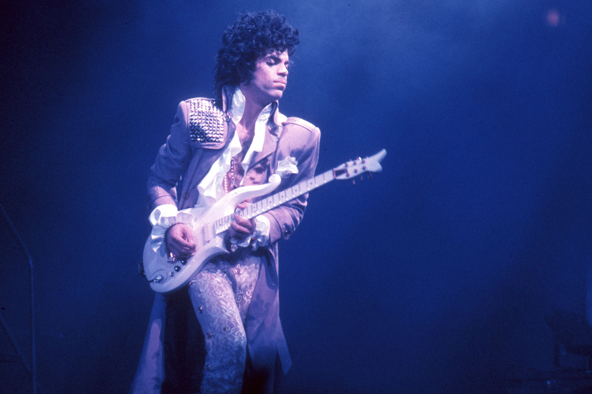

Explore Minnesota Music
Legends
Prince

Prince was one of the most naturally gifted artists of all time, and also one of the most mysterious. In the Eighties, at a time when other megastars such as Michael Jackson, Bruce Springsteen, and Madonna, were delivering an album every three years or so, Prince remained prolific to an almost inhuman degree. A byproduct of his inexhaustible output was Prince's tendency toward wayward, self-indulgent career moves (like changing his name to an unpronounceable symbol in the Nineties) that sometimes alienated even his most ardent supporters.
Discography